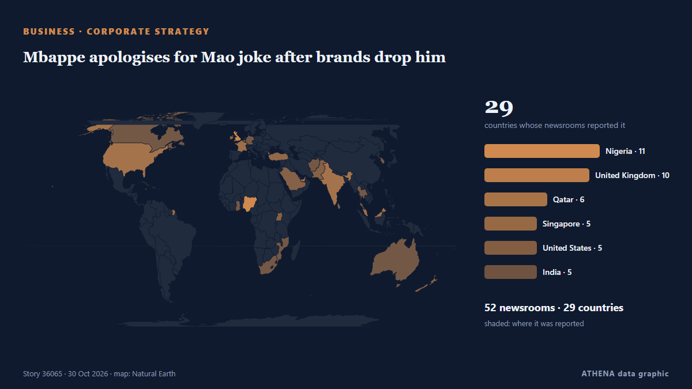

Восточная Азия
Восточная Азия: последние события по странам, с риском, источниками и странами от ATHENA.

БизнесMbappe apologises for Mao joke after brands drop him
Kylian Mbappe has apologised for his "ill-judged" comment about former Chinese leader Mao Zedong, which has led to Chinese brands dropping the Real Madrid forward. из RTÉ News
North Korea's Kim Yo Jong warns South Korea, says border loudspeakers to be ready within days
SEOUL: North Korea will place anti-South Korea loudspeakers on standby along the entire border within days and has put unspecified new countermeasures on alert, Kim Yo Jong, the powerful sister of… из Business Recorder
Japan’s FM urges Russia to release journalist detained on Sakhalin
Japanese Foreign Minister Toshimitsu Motegi on Friday urged Moscow to immediately release a Japanese journalist detained on suspicion of espionage and take steps to achieve a just and lasting peace… из Ukrinform (English)
Germany news: Chancellor Friedrich Merz accuses North Korea of threatening Europe's freedom
Friedrich Merz, who is visiting Seoul, said North Korea is putting Europe's security at risk by sending soldiers to fight for Russia in Ukraine. из DW English
Osaka says she’ll return stronger after latest low, Tokyo exit to Pohankova
Four-time Grand Slam champ Naomi Osaka loses 6-3, 7-5 to 18-year-old Slovak Mia Pohankova, ranked 144 in the world. из Al Jazeera English
N. Korea appears to test propaganda loudspeakers along border
SEOUL, Oct. 29 (Yonhap) -- North Korea appears to have conducted a test broadcas... из Yonhap (English)
North Korea linked to $6.3B Binance hack
A North Korea-based cybercrime group appears to be behind a $6.3 billion hack of the cryptocurrency exchange Binance, according to two blockchain intelligence firms. из The Hill